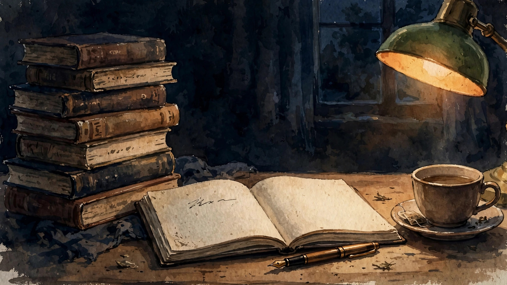
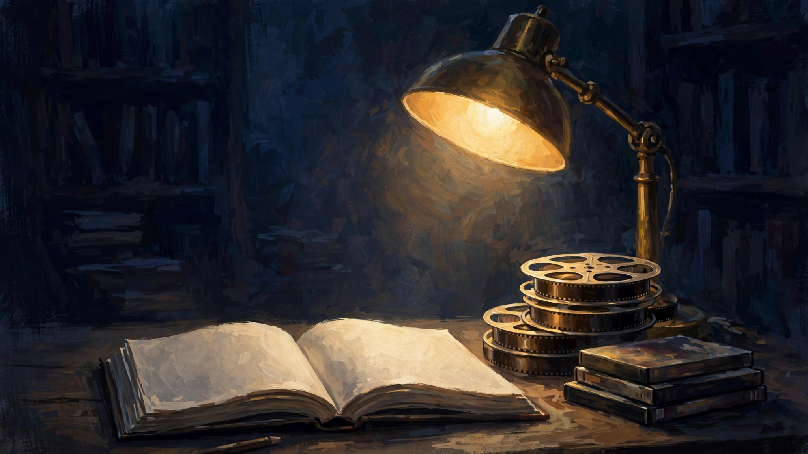

第一篇
第一次开公众号，暂定名影音书园地。业余爱好不多，能每天坚持做的只有看影视剧和读书。所以希望公众号有个日更的材料来源。


一开始就给自己定这么难的目标，不知能不能坚持。但凡事总需要开始，才有所谓能不能做成。所以，从今天就开始吧。
第一次开公众号，暂定名影音书园地。业余爱好不多，能每天坚持做的只有看影视剧和读书。所以希望公众号有个日更的材料来源。


一开始就给自己定这么难的目标，不知能不能坚持。但凡事总需要开始，才有所谓能不能做成。所以，从今天就开始吧。